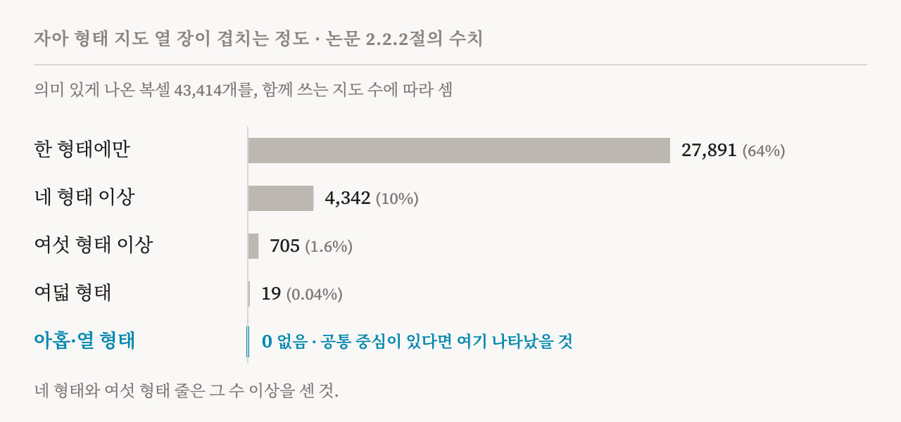
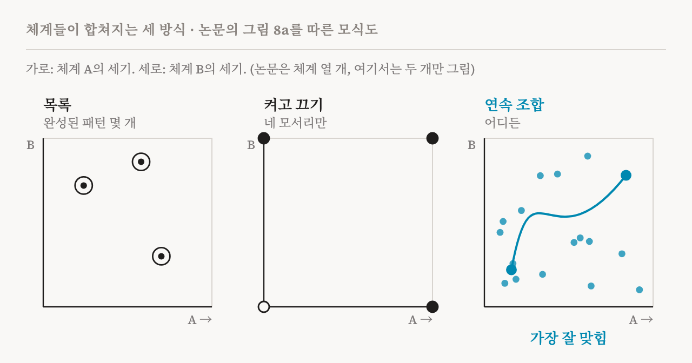

2026년 11월 16일, 유니버시티 칼리지 런던(UCL) 의식 연구 센터의 Jeremy Skipper와 동료들이 bioRxiv에 프리프린트 하나를 올렸습니다. 제목은 「'자아': 연속적인 구성 공간에서 바뀌어 가는 뇌 체계들의 연합("The self" as shifting coalitions of brain systems in a continuous configuration space)」입니다. 저자는 8명이고, 프리프린트라서 아직 동료 심사를 거치지 않았습니다.
앞 글 「자아를 잃는 두 가지 방식」은 자아가 몸의 신호로 지어진다는 관점에서 출발해, 섬엽(insula)과 전전두피질(prefrontal cortex)이 그 신호를 어떻게 다루는지 살폈습니다. 이 논문은 한 걸음 물러나 더 기본적인 질문을 던집니다. 자아는 뇌의 어디에 있을까요? 저자들의 답은, 자아만을 위한 자리는 없다는 것입니다. 기억하기, 몸 느끼기, 평가하기처럼 다른 일도 하는 뇌 체계들이 그때그때 다른 세기로 함께 일할 뿐이라는 것이죠.
하나의 '나', 여러 가지 일
내 몸을 내 것으로 알아보는 일, 마음먹은 대로 움직이는 일, 지난날을 떠올리는 일은 모두 같은 '나'가 하는 것처럼 느껴집니다. 철학에는 이 하나됨을 설명하는 두 갈래 생각이 있습니다. 하나는 경험하는 주체가 하나 있고 그것이 계속 이어진다는 생각입니다. 다른 하나는 '자아'가 여러 몸과 마음의 과정을 묶어 부르는 이름일 뿐이라는 생각입니다. 그 과정들은 기억과 의도 같은 인과 관계로 이어져 있습니다. 철학자 Derek Parfit은 앞의 것을 자아 이론(ego theory), 뒤의 것을 다발 이론(bundle theory)이라고 불렀습니다.
다발 이론을 가장 또렷하게 보여 주는 것은 불교 경전 『밀린다왕문경(Milindapañha)』의 수레 이야기입니다. 나가세나 스님이 왕에게 묻습니다. 수레는 바퀴입니까, 굴대입니까, 수레틀입니까? 어느 부분도 수레가 아니고, 부분들 말고 수레가 따로 있는 것도 아닙니다. '수레'는 부분들이 짜인 방식을 부르는 이름입니다. 스님은 '사람'도 마찬가지로 몸과 마음의 부분들이 짜인 방식을 부르는 이름이라고 말합니다.
저자들은 뇌가 자기에 관한 정보를 다루는 모든 일을 '자기 관련 처리(self-related processing)'라고 부르고, 서로 비슷한 활동끼리 묶은 갈래 하나하나를 '자아 형태(self-form)'라고 부릅니다.
중심의 후보들
뇌과학에서 자아의 중심(core)으로 자주 꼽혀 온 후보는 두 곳입니다. 하나는 뇌의 가운데 줄인 정중선(midline)을 따라 놓인 영역들, 곧 내측 전전두피질(medial prefrontal cortex)과 후측 대상피질(posterior cingulate cortex)입니다. 사람이 자신을 평가하거나 자기 기억을 떠올릴 때 이곳이 거듭 활발해진다는 결과가 많습니다. 다른 하나는 섬엽입니다. 한 메타분석(meta-analysis)은 몸 안의 상태를 느끼는 일부터 얼굴과 몸을 알아보는 일, 자신에 관해 생각하는 일까지, 자아의 모든 층에서 섬엽을 찾았습니다.
그런데 앞선 메타분석들에서도 이 후보들이 모든 자아 형태에 나타나지는 않았습니다. 몸의 소유감(ownership)과 행위주체성(agency)을 비교한 메타분석에서는 둘이 왼쪽 섬엽의 가운데 일부만 함께 썼고, 정중선 영역은 함께 나타나지 않았습니다. 게다가 두 후보는 자아 말고도 하는 일이 많습니다. 정중선 영역은 미래를 상상하거나 다른 사람의 마음을 헤아릴 때도 쓰이고, 섬엽은 주의와 감정에도 관여합니다. 그러니 어떤 영역이 자아 실험에서 자주 나온다고 해서, 그 영역이 자아만을 위한 일을 한다고 말할 수는 없습니다.
논문 912편으로 그린 지도
한 번의 실험으로는 자아의 모든 형태를 다룰 수 없습니다. 그래서 저자들은 지금까지 나온 뇌영상(neuroimaging) 연구를 모아 다시 분석했습니다. 먼저 자아와 관련된 낱말로 논문의 제목과 초록을 찾아 후보 2,068편을 모았습니다. 세 계열의 언어 모델이, 각 논문이 정말 자기 관련 처리를 연구한 것인지 판단했고, 셋 모두 그렇다고 한 1,023편을 남겼습니다. 뇌 구조만 본 연구나 리뷰처럼 설계가 맞지 않는 108편을 빼자, 논문 912편, 분석 2,075개, 보고된 뇌 위치 31,991곳이 남았습니다.
그다음 논문들을 초록의 표현이 비슷한 것끼리 묶었습니다. 이때 논문이 보고한 뇌 위치는 보지 않았고, 몇 묶음으로 나눌지도 미리 정하지 않았습니다. 가장 자주 나온 답은 10묶음이었고, 저자들은 이를 10가지 자아 형태로 봅니다. 넷은 자신을 떠올리거나 평가하는 일로, 자전적 기억(autobiographical memory), 부정적 자기 참조(negative self-reference), 자기 평가(self-appraisal), 특성 평가(trait evaluation)입니다. 저자들은 이 넷을 '성찰적 자아 형태(reflective self-forms)'라고 부릅니다. 나머지 여섯은 소유감과 행위주체성(ownership and agency), 내수용감각(interoception), 자기 점검과 통찰(monitoring and insight), 자기–타인 구분(self–other distinction), 얼굴·목소리 인식(face/voice recognition), 신체 이미지와 정체성(body image/identity)입니다. 저자들은 자아 형태마다, 논문들이 보고한 위치가 우연보다 자주 겹치는 곳을 뇌 지도로 그렸습니다.
중심은 없었다
지도 10장은 저마다 무게를 두는 곳이 달랐습니다. 자전적 기억은 해마(hippocampus)와 쐐기앞소엽(precuneus) 쪽에, 소유감과 행위주체성은 두정엽(parietal lobe)과 운동 관련 영역(motor-related regions) 쪽에, 내수용감각은 섬엽 쪽에 무게가 실렸습니다.
그렇다면 앞선 연구들이 찾은 정중선 중심은 무엇이었을까요? 저자들은 모든 논문을 한데 모아 지도를 다시 그려 봤습니다. 이렇게 합친 지도는 뇌의 22.1%를 차지해, 자아 형태 하나의 평균 지도(3.2%)보다 7배쯤 넓었습니다. 그리고 성찰적 자아 형태의 지도를 가장 많이 닮았습니다. 논문의 절반 넘게 차지하는 성찰적 자아 형태가 평균을 끌고 간 것입니다. 이렇게 보면, 앞선 연구들이 자아의 공통 중심이라고 본 정중선은 주로 자신을 떠올리고 평가하는 데 쓰이는 영역이었을 수 있습니다.
지도를 겹쳐 보면 더 분명합니다. 뇌 영상은 복셀(voxel)이라는 작은 정육면체들로 이루어지는데, 지도 10장 모두에서 의미 있게 나온 복셀은 하나도 없었고, 아홉 장에 나온 복셀도 없었습니다. 의미 있게 나온 복셀 43,414개 가운데 64%는 자아 형태 하나에만 나왔고, 네 형태 이상이 함께 쓴 것은 10%, 여섯 형태 이상은 1.6%였습니다. 가장 많이 겹친 곳도 여덟 형태가 함께 쓴 복셀 19개뿐이었고, 그마저 어느 두 형태가 빠지느냐는 곳마다 달랐습니다.

정중선과 섬엽이 아예 빠진 것은 아닙니다. 지도 10장이 모두 내측 전전두피질과 전측 섬엽(anterior insula)에 닿았습니다. 다만 그 정도가 크게 달랐습니다. 내측 전전두피질에서 의미 있게 나온 복셀은 신체 이미지와 정체성이 10개, 자전적 기억이 994개였습니다. 전측 섬엽에서는 신체 이미지와 정체성이 33개, 내수용감각이 841개였습니다. 같은 동네에 들르기는 하지만, 들르는 집도 머무는 시간도 다른 셈입니다.
그렇다면 자아 형태들을 가르는 정보는 어디에 있을까요? 저자들은 어떤 논문이 보고한 뇌 영역만 보고 그 논문의 자아 형태를 맞히는 분류기(classifier)를 학습시켰습니다. 뇌 전체를 쓰면 정확도가 22.6%로, 아무렇게나 찍을 때(10%)의 두 배를 넘었습니다. 가장 잘 맞히는 영역 하나만 쓰면 12.6%, 가장 잘 맞히는 뇌 구역 하나만 쓰면 16.2%에 그쳤습니다. 가장 잘 맞히는 영역 200개를 빼고 다시 학습시켜도 정확도는 22.0%로, 아무 영역 200개를 뺐을 때(22.2%)와 거의 같았습니다. 자아 형태를 가르는 정보가 몇 군데에 몰려 있지 않고 뇌 전체에 퍼져 있다는 뜻입니다.
저자들은 중심이라고 부르려면 세 조건을 채워야 한다고 정리합니다. 모든 자아 형태에 나타나야 하고, 자아만을 위한 일을 해야 하고, 자아 형태들의 차이를 담고 있어야 합니다. 첫째 조건은 겹침 결과에서, 셋째 조건은 분류기 결과에서 무너졌습니다. 둘째 조건은 다음 결과가 답합니다.
다른 일도 하는 체계들
저자들은 지도 10장을, 자아와 상관없는 연구 주제의 지도 50장과 비교했습니다. 주제마다 그 주제를 다룬 뇌영상 연구를 모아 그린 지도입니다. 모든 자아 형태가 일반적인 기능의 지도를 닮았고, 가장 닮은 짝은 내용이 통하는 주제였습니다. 자전적 기억은 기억 인출(memory retrieval)의 지도와(r = 0.508), 소유감과 행위주체성은 남의 행동을 보는 일(action observation)의 지도와(r = 0.541), 내수용감각은 통증과 몸 감각(pain and somatosensation)의 지도와(r = 0.392) 닮았습니다. 여기서 r은 상관계수(correlation coefficient)로, 1이면 두 지도가 똑같다는 뜻입니다. 자아에 쓰이는 체계가 자아만을 위해 따로 있는 것이 아니라 다른 일에도 다시 쓰인다는 것이고, 뇌과학에서는 이를 신경 재사용(neural reuse)이라고 부릅니다. 이것으로 둘째 조건도 무너집니다.
맥락도 영향을 줍니다. 같은 자아 형태 안에서도 논문마다 보고한 영역이 달랐는데, 그 차이의 일부는 초록에 적힌 과제, 자극, 참가자로 예측됐습니다. 효과는 작았습니다. 한 연구에서는 두 문화권에 속한 참가자에게 개인주의나 집단주의 가치를 먼저 떠올리게 했더니, 정중선 영역의 반응 순서가 뒤집혔습니다.
의식과의 관계도 자아 형태마다 달랐습니다. 저자들은 다른 메타분석에서 의식 연구를 일곱 갈래로 나눈 적이 있습니다. 자전적 기억의 지도는 '기억과 학습 속의 자각(awareness in memory and learning)' 갈래를 '의식적 지각과 주의(conscious perception and attention)' 갈래보다 더 닮았고(0.636 대 0.363), 소유감과 행위주체성은 그 반대였습니다(0.398 대 0.666). 가장 강한 짝은 내수용감각과 '내수용 자각과 통증 경험(interoceptive awareness and pain experience)'(0.691)이었습니다. 자아와 의식이 늘 한 덩어리로 움직이는 것은 아니라는 뜻입니다.
세기를 바꿔 가며 섞이다
마지막 질문은 체계들이 어떻게 합쳐지느냐입니다. 저자들은 세 가지 설명을 겨뤘습니다. 목록 모델(inventory model)에서는 뇌가 완성된 패턴 몇 개를 갖고 있다가 그중 하나를 통째로 꺼내 씁니다. 켜고 끄기 모델(on/off model)에서는 체계들을 자유롭게 조합하지만, 각 체계는 정해진 세기로 켜지거나 꺼질 뿐입니다. 연속 조합 모델(graded model)에서는 각 체계의 세기가 어떤 값이든 될 수 있습니다.
세 모델에게, 학습에 쓰지 않은 논문이 뇌 한쪽 반구(hemisphere)에서 보고한 영역을 주고 다른 쪽 반구를 맞히게 했습니다. 연속 조합 모델이 가장 잘 맞혔습니다. 오차가 목록 모델보다 2.5%, 켜고 끄기 모델보다 2.6% 작았습니다. 가장 좋은 연속 조합 모델은 구성 요소(component)가 10개였습니다. 그러면 자아의 한 상태는 세기 10개로 이루어진 '구성(configuration)' 하나가 되고, 그런 구성들이 놓이는 연속적인 공간이 '구성 공간(configuration space)'입니다.
슬라이더가 10개 달린 음향 믹서를 떠올리면 쉽습니다. 기억 슬라이더를 많이 올리고 몸 감각 슬라이더를 조금 올리면 자전적 기억에 가까운 소리가 나고, 비율을 바꾸면 소리도 조금씩 달라집니다. 논문의 예도 그렇습니다. 부끄러웠던 대화를 떠올릴 때는 몸의 느낌과 평가가 크게 끼어들고, 무슨 말을 했는지 전하려고 떠올릴 때는 기억 쪽에 더 무게가 실립니다. 우리가 이름 붙인 자아 형태는 자주 쓰는 슬라이더 조합이고, 그 사이의 조합도 얼마든지 가능합니다.

그런데 왜 '나'는 하나로 느껴질까
중심이 없다면, 왜 우리는 이어지는 하나의 '나'로 느낄까요? 저자들은 두 가지를 듭니다. 첫째, 거듭 참여하는 체계들이 있습니다. 모든 지도가 정중선과 섬엽 근처에 닿았듯이, 같은 체계들이 여러 구성에 거듭 끼어듭니다. 어느 한 곳이 모든 구성에 끼지 않아도 그렇습니다. 한결같다는 느낌에 필요한 것은 자아만의 장치가 아니라 이런 되풀이라는 것입니다. 둘째, '나'라는 이름입니다. 몸의 느낌, 기억, 행동에 '나'를 붙이는 일이 그것들을 같은 사람의 것으로 묶습니다. 이 '나 붙이기'도 되풀이되는 활동 가운데 하나일 뿐이라서, 그 뒤에 주인이 따로 있어야 하는 것은 아닙니다.
이 설명은 몇 가지 예측으로 이어집니다. 경험을 '내 일'의 맥락에 놓는 체계들의 기여는 약해지고 지각을 맡는 체계들은 그대로 일한다면, 보고 듣는 일은 이어지는데 그것이 '나'의 것처럼 느껴지지 않을 것입니다. 숙련된 명상가와 5-MeO-DMT라는 환각제(psychedelic)를 쓴 참가자들의 보고가 이 예측의 바탕입니다. 「자아를 잃는 두 가지 방식」에서 본, 자아는 옅어지는데 지각은 멀쩡한 경험과 맞닿는 대목입니다.
정신 건강에 대해서는, 잘 지낸다는 것이 필요에 따라 어떤 구성에 들어가고, 머물고, 빠져나오는 능력이라고 예측합니다. 그러면 되새김(rumination)은 자신을 비판하는 구성에서 빠져나오지 못하는 상태가 됩니다. 명상은 두 방식으로 도울 수 있습니다. 생각을 생각으로 알아차리는 수행은 구성에서 빠져나오기 쉽게 만들고, '이것이 나인가'를 묻는 수행은 어느 한 구성을 나와 동일시하는 마음을 느슨하게 만듭니다.
따져 볼 점
첫째, 자료의 단위가 논문입니다. 한 사람의 뇌를 시간에 따라 본 것이 아니라, 논문마다 보고한 위치를 모은 것입니다. 그래서 '연속적으로 섞인다'는 결과는, 사람마다 또는 순간마다 다른 몇 가지 상태가 섞여서 그렇게 보인 것일 수도 있습니다. 저자들도 이 점을 인정하고, 한 사람 안에서 시행 하나하나를 두고 세 모델을 비교하는 실험을 제안합니다.
둘째, 효과가 작습니다. 10묶음이 세 묶음보다 예측을 잘한 정도는 0.14%, 연속 조합 모델이 다른 모델보다 나은 정도는 2.5~2.6%입니다. 통계적으로는 믿을 만하지만 차이 자체는 작습니다. 분류 정확도 22.6%도 아무렇게나 찍는 것보다는 높지만, 높은 숫자는 아닙니다.
셋째, '없다'를 보이기는 어렵습니다. 논문들은 가장 강한 지점만 골라 보고하고, 지도에는 문턱값(threshold)을 넘은 곳만 남습니다. 그래서 모든 자아 형태에 약하게 공통으로 기여하는 곳이 있어도 놓쳤을 수 있습니다. 또 활동이 보인다는 것과 꼭 필요하다는 것은 다릅니다. 섬엽, 전측 대상피질(anterior cingulate cortex), 내측 전전두피질이 양쪽 모두 크게 손상된 한 환자는 자기 인식을 상당 부분 유지했습니다. 그런데 내측 전전두피질만 손상된 환자들에게서는 자신과 관련된 정보를 더 잘 기억하는 효과가 사라졌습니다. 어느 영역이 꼭 필요한지는 어떤 능력을 보느냐에 따라 다를 수 있습니다.
넷째, 자아 형태는 초록의 표현으로 나눴습니다. 표현에는 연구 방법과 참가자 집단도 묻어 있고, 10묶음 가운데 둘은 환자 집단을 다룹니다. 논문을 고르고 묶음에 이름을 붙이는 데는 언어 모델을 썼고, 각 실험이 정말 자기 관련 처리만 떼어 냈는지는 사람이 확인하지 않았습니다.
다섯째, 구성 요소 10개는 통계 모델이 뇌 체계를 대신해 세운 가상의 단위입니다. 대뇌 피질(cerebral cortex)에만 맞춘 한 가지 모델의 결과이고, 실제 뇌 체계와 어떻게 대응하는지는 아직 확인되지 않았습니다.
AI에 비추어 보면
논문은 AI를 다루지 않지만, 「자아를 잃는 두 가지 방식」을 맺은 질문과 나란히 놓아 볼 만합니다. 그 글은 "모델에서는 무엇이 자기 모델의 자리에 있을까?"라고 물었습니다. 이 논문을 읽고 나면 질문을 조금 바꾸게 됩니다. 사람에게도 자아만을 위한 자리가 따로 없을 수 있다면, AI에서도 자기 모델이라는 장치 하나를 찾기보다, 모델이 자신에 대해 말할 때 어떤 구성 요소들이 어떤 세기로 함께 일하는지를 물어야 할지 모릅니다. 해석 가능성(interpretability) 연구도 비슷한 그림을 보여 줍니다. 「안에서 보는 AI」 8편 「중첩 가설」에서 썼듯, 모델 안의 개념은 뉴런 하나에 담기기보다 여러 뉴런에 겹쳐 퍼져 있는 경우가 많습니다. 다만 퍼져 있다는 것만으로 같은 원리라고 할 수는 없고, 모델이 자신에 대해 말할 때의 구성이 실제로 되풀이되는지는 따로 확인해야 합니다.
“'수레'가 바퀴와 굴대와 수레틀이 짜인 방식을 부르는 이름이듯, '나'는 다른 일도 하는 뇌 체계들이 함께 일하는 방식을 부르는 이름일지 모릅니다.”